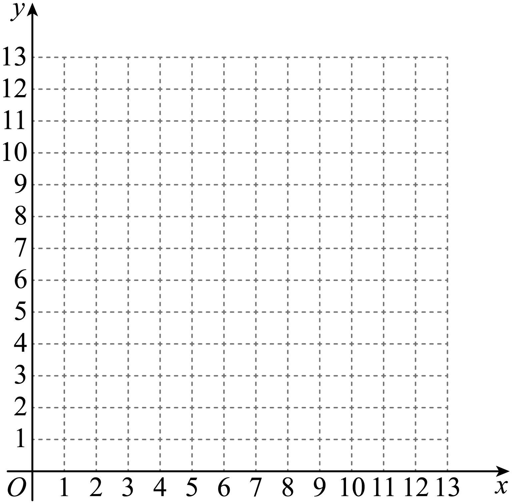

2023年北京中考数学 第25题
25. 某小组研究了清洗某种含污物品的节约用水策略．部分内容如下．
每次清洗1个单位质量的该种含污物品，清洗前的清洁度均为0.800要求清洗后的清洁度为0.990
方案一：采用一次清洗 方式．
方式．
结果：当用水量为19个单位质量时，清洗后测得的清洁度为0.990．
方案二：采用两次清洗的方式．
记第一次用水量为 个单位质量，第二次用水量为
个单位质量，第二次用水量为 个单位质量，总用水量为
个单位质量，总用水量为 个单位质量，两次清洗后测得的清洁度为C．记录的部分实验数据如下：
个单位质量，两次清洗后测得的清洁度为C．记录的部分实验数据如下：
| 11.0 | 9.0 | 9.0 | 7.0 | 5 5 5 | 4.5 | 3.5 | 3.0 | 3.0 | 2.0 | 1.0 |
| 0.8 | 1.0 | 1.3 | 1.9 | 2.6 | 3.2 | 4.3 | 4.0 | 5.0 | 7.1 | 11.5 |

| 11.8 | 100 | 10.3 | 8.9 | 81 | 7.7 | 7.8 | 7.0 | 8.0 | 9.1 | 12.5 |
C | 0.990 | 0.989 | 0.990 | 0.990 | 0.990 | 0.990 | 0.990 | 0.988 | 0.990 | 0.990 | 0.990 |
对以上实验数据进行分析，补充完成以下内容．
（Ⅰ）选出C是0.990的所有数据组，并划“√”；
（Ⅱ）通过分析（Ⅰ）中选出的数据，发现可以用函数刻画第一次用水量和总用水量之间的关系，在平面直角坐标系 中画出此函数的图象；
中画出此函数的图象；

结果：结合实验数据，利用所画的函数图象可以推断，当第一次用水量约为______个单位质量（精确到个位）时，总用水量最小．
根据以上实验数据和结果，解决下列问题：
（1）当采用两次清洗的方式并使总用水量最小时，与采用一次清洗的方式相比、可节水约______个单位质量（结果保留小数点后一位）；
（2）当采用两次清洗的方式时，若第一次用水量为6个单位质量，总用水量为7.5个单位质量，则清洗后的清洁度C______0.990（填“>”“=”或“<”）．